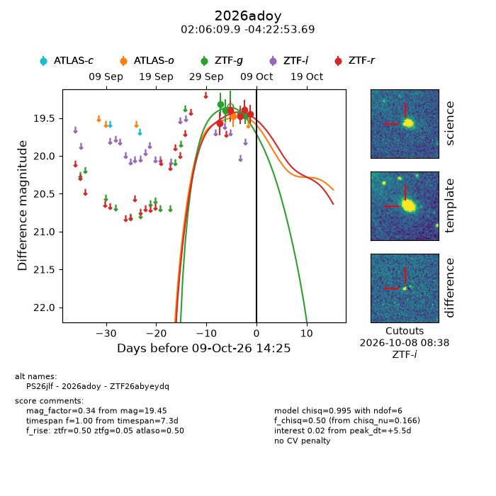
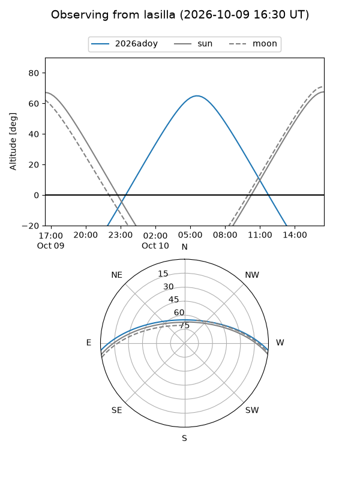
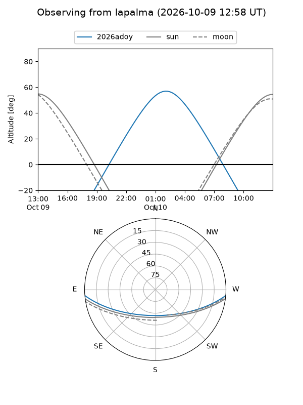
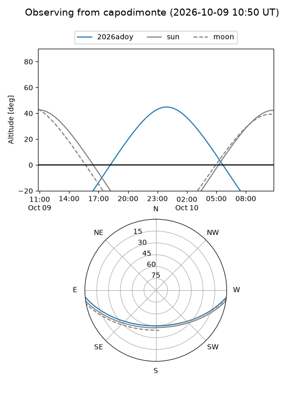
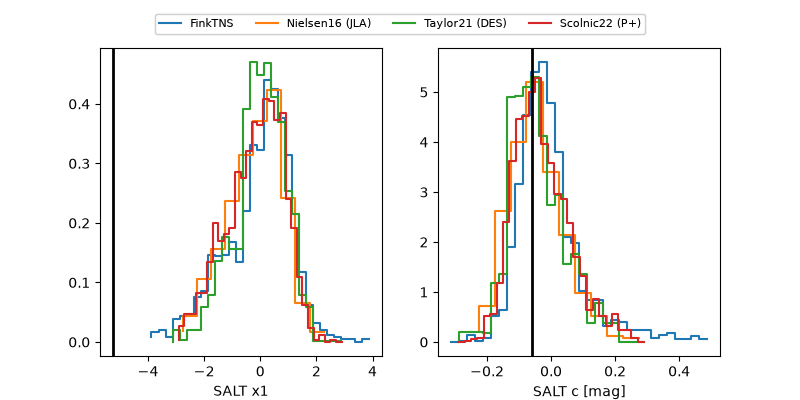

2026adoy
Target 2026adoy at 2026-10-09 14:26
Aliases and brokers:
FINK-ZTF: ztf.fink-portal.org/ZTF26abyeydq
Lasair-ZTF: lasair-ztf.lsst.ac.uk/objects/ZTF26abyeydq
ALeRCE-ZTF: alerce.online/object/ZTF26abyeydq
YSE-PZ: ziggy.ucolick.org/yse/transient_detail/2026adoy
TNS name: wis-tns.org/object/2026adoy
Direct TNS query: direct search
alt names
ZTF26abyeydq (ztf,fink_ztf)
2026adoy (tns,yse)
PS26jlf (panstarrs)
Coordinates:
equatorial (ra, dec) = 31.5413,-4.38158
equatorial (HMS+DMS) = 02:06:09.92,-04:22:53.69
galactic (l, b) = (164.2974,-61.10047)
Flags:
peak dt: +5.5
Photometry:
last atlaso=19.47, ztfg=19.46, ztfr=19.45
1 atlaso, 4 ztfg, 5 ztfr detections
Lightcurve

Visibility



Additional plots
